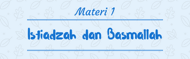

1. Isti’adzah
• Lafadz :
اعوذ بالله السميع العليم من الشّيطن الرجيم
اعوذ بالله من الشّيطن الرجيم
• Cara Membaca :
- Dibaca pelan ketika tilawah dengan pelan
- Dibaca pelan ketika sendirian meskipun tilawah bersuara
- Dibaca keras bila tilawah keras dan ada orang lain yang mendengarkan
- Ketika bergantian bisa dibaca oleh yang pertama saja, bisa juga masing-masing membaca.
2. Basmallah
• Lafadz :
بسم الله الرحمن الرحيم
• Cara Membaca :
- Dibaca ketika memulai tilawah dari awal surat kecuali At-Taubah
- Ketika tilawah dimulai dari tengah surat, basmallah boleh dibaca boleh tidak.
3. Tata Cara Membacanya
Adapun tata cara dalam membaca Isti’adzah Basmalah dan Surat memiliki 4 (empat) wajah/cara yang diperbolehkan munurut Hafs’an Ashim yaitu :
1. Memutus semua, contoh :
ﺍﻋﻮﺬﺒﺎﷲﻤﻦﺍﻠﺸﻴﻄﺎﻦﺍﻠﺮﺠﻴﻢ۞ﺒﺴﻡﺍﷲﺍﻠﺮﺤﻤﻦﺍﻠﺮﺤﻴﻢ۞ﺍﻠﺤﻤﺪﷲ
2. Menyambung basmalah dengan surat saja, contoh :
ﺍﻋﻮﺬﺒﺎﷲﻤﻦﺍﻠﺸﻴﻄﺎﻦﺍﻠﺮﺠﻴﻢ۞ﺒﺴﻡﺍﷲﺍﻠﺮﺤﻤﻦﺍﻠﺮﺤﻴﻢﺍﻠﺤﻤﺪﷲ
3. Menyambung Isti’adzah dengan Basmalah, contoh :
ﺍﻋﻮﺬﺒﺎﷲﻤﻦﺍﻠﺸﻴﻄﺎﻦﺍﻠﺮﺠﻴﻢﺒﺴﻡﺍﷲﺍﻠﺮﺤﻤﻦﺍﻠﺮﺤﻴﻢ۞ﺍﻠﺤﻤﺪﷲ
4. Menyambung semua, contoh :
ﺍﻋﻮﺬﺒﺎﷲﻤﻦﺍﻠﺸﻴﻄﺎﻦﺍﻠﺮﺠﻴﻢﺒﺴﻡﺍﷲﺍﻠﺮﺤﻤﻦﺍﻠﺮﺤﻴﻢﺍﻠﺤﻤﺪﷲ